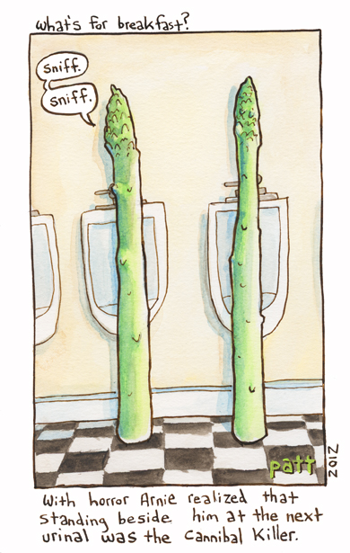

Algunas personas perciben un olor distintivo en su orina después de comer espárragos, mientras que otras nunca perciben el olor. Estas diferencias podrían surgir de la variación entre las personas en el perfil químico de la orina (es decir, cómo se metabolizan los compuestos del espárrago) o de la variación en la capacidad de diferentes personas para detectar el olor.
Un artículo (Pelchat et al. 2010 Chemical Senses) revisó estos estudios y presentó los siguientes datos que describen la variación entre cuatro poblaciones de estudio:
Israel (Lison et al. 1980), 328, 0 China (Hoffenberg 1983), 96, 2 EE. UU. (Sugarman and Neelon 1985), 10, 5 EE. UU. (Lison et al. 1980), 11, 10
asparagus <- matrix(c(328, 96, 10, 11, 0, 2, 5, 10), nrow = 4, dimnames = list(c("Israel", "China", "USA.1", "USA.2"), c("Can detect odour", "Cannot detect odour")))
asparagus## Can detect odour Cannot detect odour
## Israel 328 0
## China 96 2
## USA.1 10 5
## USA.2 11 10Q1 ¿Cuántas personas se esperaría que perciban el olor en cada población si todas las poblaciones de estudio tuvieran la misma proporción de personas capaces de detectar el olor?
chisq.test(asparagus, correct = F)$expected## Warning in chisq.test(asparagus, correct = F): Chi-squared approximation may be
## incorrect## Can detect odour Cannot detect odour
## Israel 315.93074 12.0692641
## China 94.39394 3.6060606
## USA.1 14.44805 0.5519481
## USA.2 20.22727 0.7727273Q2 ¿Qué prueba estadística podrías usar para detectar diferencias entre las poblaciones en la percepción del olor? Asegúrate de verificar que se cumplan las suposiciones de la prueba.
Q3 Realiza la prueba seleccionada. ¿Cuál es el valor de p obtenido?
fisher.test(asparagus)##
## Fisher's Exact Test for Count Data
##
## data: asparagus
## p-value < 2.2e-16
## alternative hypothesis: two.sided
Eres un ecólogo conductual que estudia la dieta de los possums cola de anillo comunes (Pseudocheirus peregrinus) en dos sitios (sitios A y B) dominados por dos especies de Eucalyptus (E. ovata y E. sideroxylon).
Observas que los possums en el sitio A tienden a comer E. ovata, mientras que en el sitio B principalmente comen E. sideroxylon. Para probar si las poblaciones en cada sitio difieren en las preferencias alimentarias, colocas collares de radio a siete possums en el sitio A y ocho possums en el sitio B. Sigues a cada possum y anotas la especie del primer árbol del cual observas que come hojas.
En el sitio A, ves que seis possums comen E. ovata y uno come E. sideroxylon. En el sitio B, ninguno come E. ovata y ves que los ocho comen E. sideroxylon.
Q1 ¿Cuál es la probabilidad exacta de observar este patrón o uno más extremo por pura casualidad?
Q2 ¿Existe evidencia que sugiera que los zarigüeyas en los sitios A y B difieren en su uso de los árboles alimentarios?
Autor: Alistair Poore
Año: 2016
Última actualización: Jun. 2023